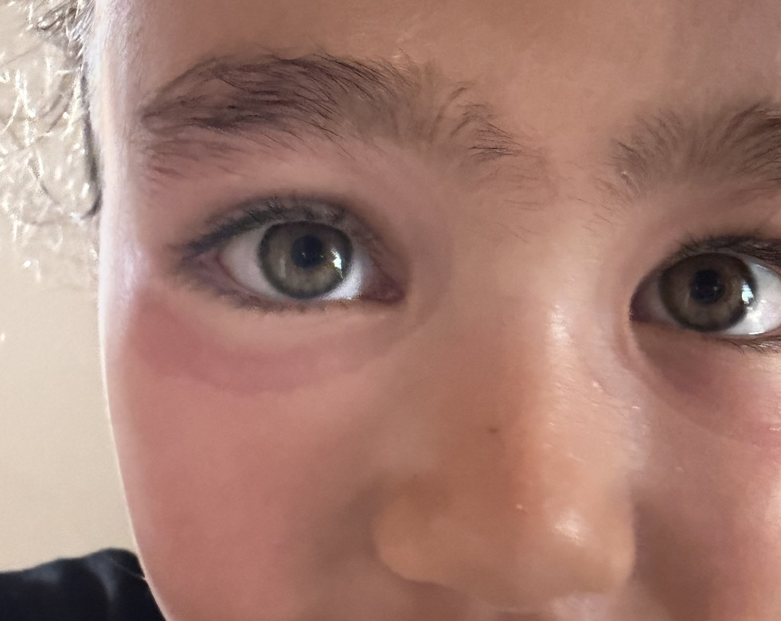
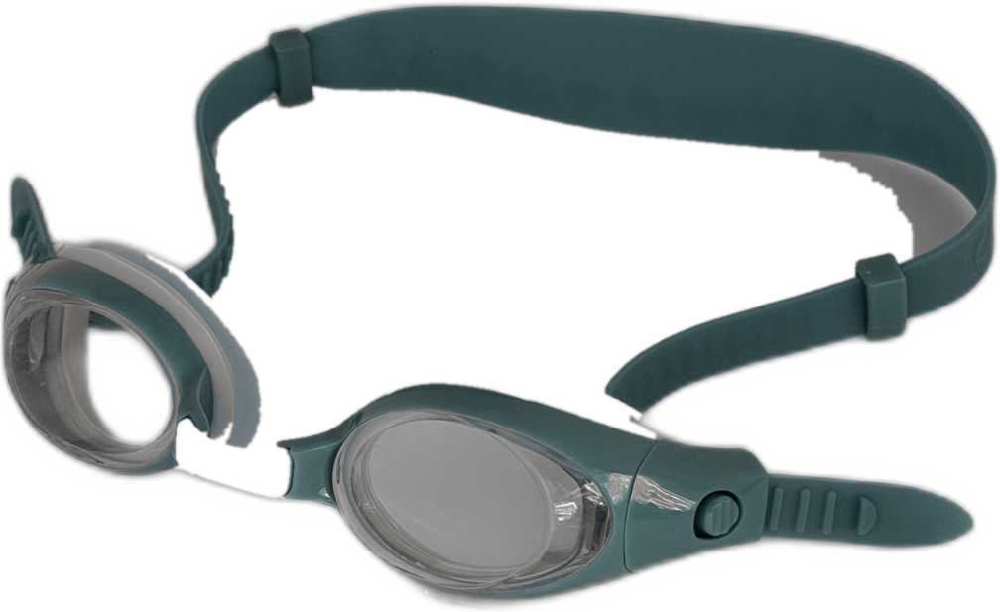
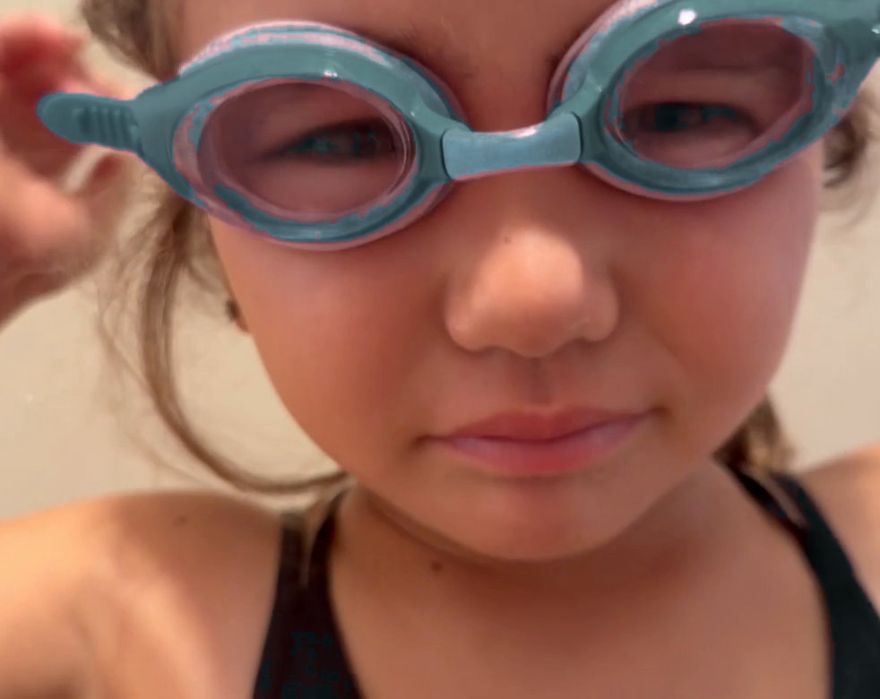

90-DAY FIT GUARANTEE
「次こそ合うかな」を、
終わりに。
子どものスイミングゴーグルは、買う前に合うかどうかが分かりません。だから nouch は、合うまでを商品にしました。
$38 ／ 3〜12歳 ／ 合わなければ無料で交換

90日間
フィット保証
交換の
返送は不要
成長にあわせて
交換できる
PROBLEM
その引き出し、
何個目ですか。
- 「痛い」と言って、外す。
- ストラップをゆるめる。
- 今度は、水が入る。
- また締める。また「痛い」。
- 別のものを買う。またダメだった。
気づけば、使っていないゴーグルが7個。
選び方が悪かったわけでは、ありません。
レビューを読んで、サイズを測って、良さそうなものを選んだ。それでも分からなかった。子ども用ゴーグルは、そういう商品だからです。
買う前には、分からない。
理由は3つあります。
-
01
漏れるかどうかは、水に入るまで分からない
店頭で顔に当ててみても、泳いだときの水圧までは再現できません。
-
02
跡や痛みは、しばらく着けてみないと分からない
目の周りのシールの形は、その子の顔の骨格と合うかどうかで決まります。
-
03
そして子どもは、「痛い」としか言えない
どこが、どう痛いのか。大人のように説明することができません。
ランキング記事を10本読んでも、それは他の子の顔の形の話です。引き出しの中のゴーグルは、減りません。
SOLUTION
だから nouch は、
「合うまで」を
商品にしました。
ゴーグルを売って終わりにしません。実際にプールで使って、合わなければ交換して、合うところまでが商品です。
これまでの買い物
買う → 合わない → それは、あなたの問題 → また買う
nouch の買い物
買う → 泳ぐ → 合わない → 無料で交換 → 合う
HOW IT WORKS
合うまでの、4ステップ。
-
1
選ぶ
年齢とサイズの目安から1つ選びます。ここは、他のブランドと同じです。
-
2
プールで、実際に使う
試着では分かりません。何回か泳いでから判断してください。ここが nouch の考え方です。
-
3
合わなければ、交換
90日以内、最大2回まで無料。使ったあとでも大丈夫です。返送も要りません。
鼻あての幅とシールの当たり方が変わるので、次は結果が変わります。 -
4
合うものが、決まる
もう「次こそ合うかな」と思いながら買わなくてよくなります。
合わなかったゴーグルの返送は不要です。送り返す手間も、送料もかかりません。
nouch
No+Ouch
「痛い」を、なくす。
それがブランドの名前になっています。
COMPARE
他の選択肢と、
どう違うのか。
| 項目 | 一般的な ゴーグル |
カスタム ゴーグル |
nouch |
|---|---|---|---|
| 価格 | $15〜30 | $80〜105 | $38 |
| 対象年齢 | 幅広い | 10〜18歳 | 3〜12歳 |
| 買う前に 合うと分かる | — | スキャンで 合わせる | 使ってから 決める |
| 合わなかった ときは | 買い直す | 作り直す | 無料で 交換する |
※ 価格・対象年齢は各社公表情報にもとづく参考値です（2026年9月時点）。
カスタムゴーグルは、一度で完璧に合わせるという考え方です。nouch は、何度でもやり直せるという考え方です。子どもは、育つからです。
VOICE
使った人の声
最初に届いたものは、少し目の下が痛いと言われました。交換をお願いしたら、鼻あてが狭いものが届いて、それからは何も言わなくなりました。「合わなかったら言ってください」と最初から書いてあるので、申し訳ない気持ちにならずに済みました。
引き出しに、使っていないゴーグルが7個ありました。毎回「今度こそ」と思って買っていたので。今は1つだけです。買い足していない、という事実にいちばん驚いています。
1年たって、去年ぴったりだったものが跡をつけるようになりました。プランで交換したら、また何も言わなくなりました。顔が変わるのは分かっていたのに、ゴーグルのほうを変えられるとは思っていませんでした。
※ 架空ブランドのため、この3件は学習課題としての制作例です。実在する購入者の声ではありません。
PRODUCT
nouch ゴーグル


合う可能性を、3つ用意しています。
どれが合うか、あなたが決めなくて大丈夫です。年齢といくつかの質問から最初の1つを提案して、合わなければ次を送ります。
Fit 01 / Narrow ／ 鼻あてが狭く、シールが深く当たる
Fit 02 / Standard ／ 中間。多くの子はここから
Fit 03 / Wide ／ 鼻あてが広く、シールが浅く広く当たる
順番に試して、合ったところで終わりです。交換は90日以内・最大2回まで無料。
OPTION ／ GROWTH PLAN
育っても、
合いつづける。
子どもの顔は、1年で変わります。去年ぴったりだったものが、今年は跡をつける。だから nouch には、成長に合わせて交換できるプランがあります。
- NOW今のFitぴったり
- GROW育つ顔が変わる
- NEW FIT次のFit選び直す
FAQ
よくあるご質問
一度使ったあとでも、交換できますか？
はい。むしろ、実際にプールで使ってから判断してください。試着だけでは分からないというのが、nouch の出発点です。
何回まで交換できますか？
ご購入から90日以内、最大2回までです。3つ試して決まらない場合は、私たちの型が足りていないということなので、個別にご相談させてください。
交換したゴーグルは、返送が必要ですか？
不要です。衛生上、使用済みのものを再販することはありません。そのままお手元で処分いただいて構いません。
何歳から使えますか？
3〜12歳を対象に設計しています。特に、まだ自分でフィット感をうまく説明できない4〜9歳のお子さんに向いています。